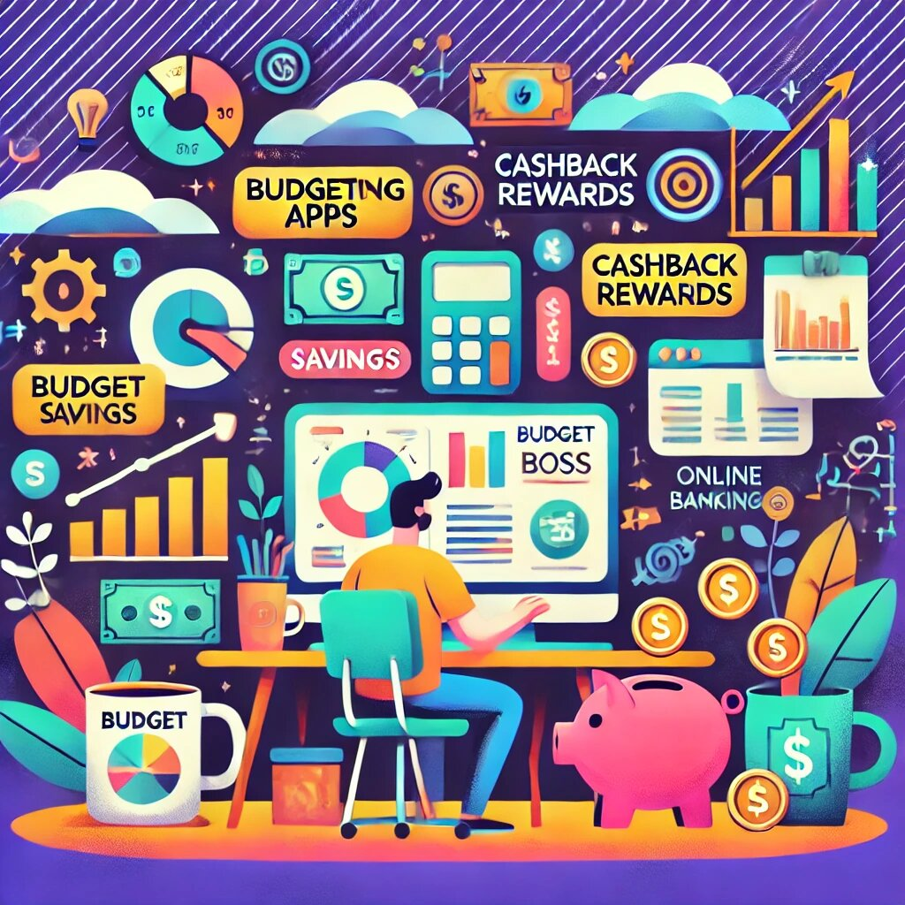

Online Best Financial Tips: How to Make Your Money Work Smarter
In today’s fast-paced digital world, learning the online best financial tips isn’t just convenient—it’s essential. With over a decade of experience in digital marketing and business growth, I’ve learned a thing or two about making the most of your money on the web. Whether you're saving, investing, or simply trying not to blow your entire paycheck on flash sales, these tips will help you thrive financially. Let’s dive in!
1. Budget Like a Boss
Ever hear the saying, "Failing to plan is planning to fail"? This couldn’t be more accurate when it comes to your money. Budgeting is the foundation of financial success. Here’s the trick: make it digital. Use apps like Mint, YNAB (You Need a Budget), or even Google Sheets to track your income and expenses.
Set categories for essentials like rent, utilities, and food—and don’t forget a category for your guilty pleasures (because let’s face it, life without coffee runs and Netflix is no life at all).
Pro Tip: Always give yourself a buffer. Life happens, and unexpected expenses can sneak up faster than your next Amazon delivery.
2. Save First, Spend Later
Most people save whatever’s left after spending. Flip the script! Set aside a portion of your income for savings as soon as you get paid. Automate the process so you don’t even have to think about it—out of sight, out of mind, and into your savings.
Aim to save at least 20% of your income, but even 5% is a great start. The key is consistency. Over time, this habit can grow into a financial cushion you’ll be grateful for when times get tough.
Funny Note: Saving money might not feel exciting now, but future you will thank you. Imagine retired you sipping piña coladas on a beach because you resisted the urge to buy a fifth pair of wireless earbuds.
3. Invest, Don’t Just Save
While saving is critical, letting your money sit in a bank account isn’t going to make you rich. Enter: investing. It might sound intimidating, but platforms like Robinhood, E*TRADE, or Wealthsimple make it beginner-friendly.
Start small. Even $50 a month in an index fund can compound into a significant amount over time. Remember, the earlier you start, the more time your money has to grow.
Rule of Thumb: Only invest money you won’t need in the short term. The stock market is like a moody teenager—brilliant one moment, unpredictable the next.
4. Master the Art of Cashback and Rewards
If you’re going to spend money, you might as well get something back. Use credit cards with cashback or rewards programs. Pay off your balance in full every month to avoid interest, and you’ll effectively earn free money for your everyday spending.
Check out options like Chase Freedom Unlimited, Capital One Quicksilver, or American Express Blue Cash. For online shopping, tools like Rakuten or Honey can help you snag cashback and discounts effortlessly.
Quick Laugh: Cashback feels like finding money in your pocket, except you didn’t forget about it—you earned it like the savvy spender you are.
5. Learn to Love DIY Financial Education
There’s no shortcut to wealth, but there’s definitely a smart way: educate yourself. Follow financial blogs, YouTube channels, or podcasts. Learn about topics like investing, retirement planning, and online side hustles.
- Podcasts: The Financial Independence Podcast, Smart Passive Income with Pat Flynn
- YouTube Channels: Graham Stephan, Nate O’Brien
- Books: Rich Dad Poor Dad by Robert Kiyosaki, The Intelligent Investor by Benjamin Graham
6. Start a Side Hustle
In the age of the internet, there’s no excuse for having just one source of income. Whether it’s freelancing, selling handmade goods on Etsy, or running a blog, a side hustle can boost your income and give you financial freedom.
7. Cut the Fat: Subscriptions Edition
How many streaming services do you actually use? Be honest. It’s easy to lose track of subscriptions that quietly drain your wallet each month. Review your bank statements and cancel anything you’re not actively using.
Pro tip: Use services like Truebill or Trim to identify and manage recurring subscriptions automatically.
Humor Alert: Do you really need three separate apps to watch re-runs of Friends? I didn’t think so.
Track Progress and Celebrate Wins
Managing your money is a journey, not a race. Set milestones—like saving $1,000 for an emergency fund or paying off a credit card—and celebrate when you hit them.
Celebration Idea: Treat yourself to something small but meaningful, like a fancy coffee or a new book. Just don’t blow your budget in the process!
Final Thoughts
Managing your finances online doesn’t have to be complicated or boring. With the right tools, a bit of discipline, and a dash of humor, you can build a solid financial future while still enjoying the present.
Remember, the key to financial success is simple: start small, stay consistent, and always look for opportunities to grow. Your future self will thank you—and maybe even high-five you from the comfort of an early retirement.
Happy money managing! 🚀